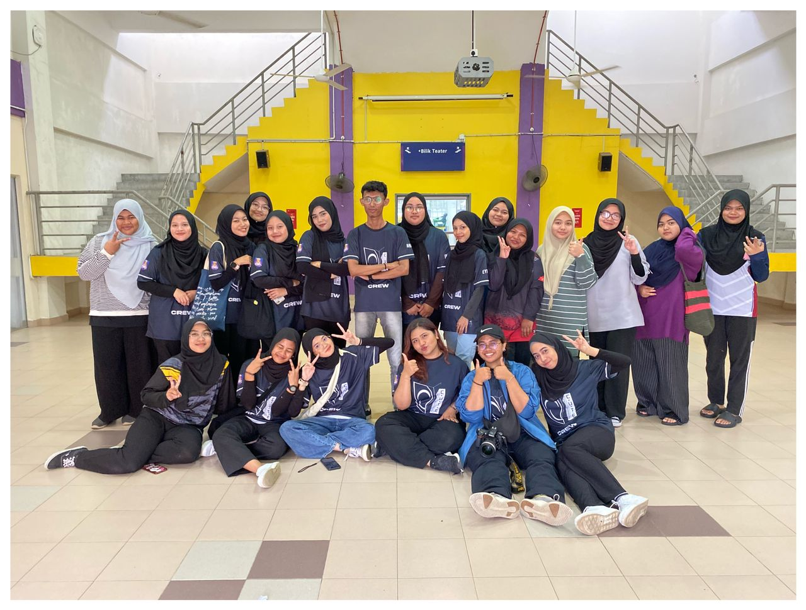

I joined this club when I was in semester 1, rising from Choreographer to Vice President. I love to dance, thus I want to use this club as a platform to showcase my talent. Along with performing well, I have gained organizational skills. Despite the difficulty, it gave me a lot of experiences and memories.
CREW

The same is true with the Seri Serangkai Tari Club, which I joined when I was a first-year student. I want to explore backstage in addition to performing on stage. We have four divisions in the crew: makeup, lighting, multi, and props. I go with makeup and multi.